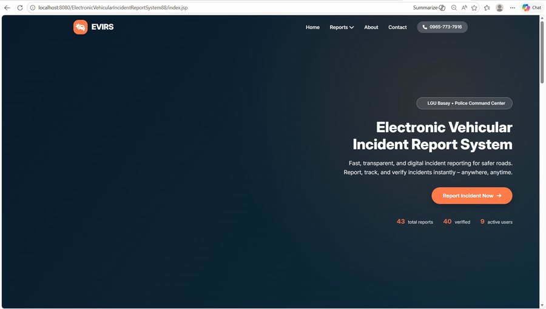
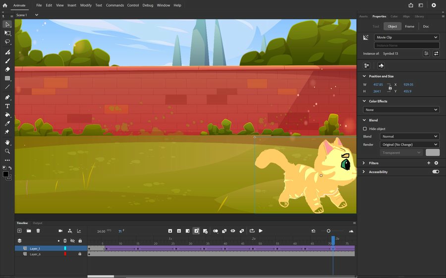
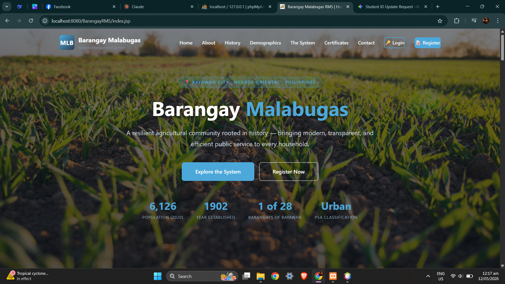
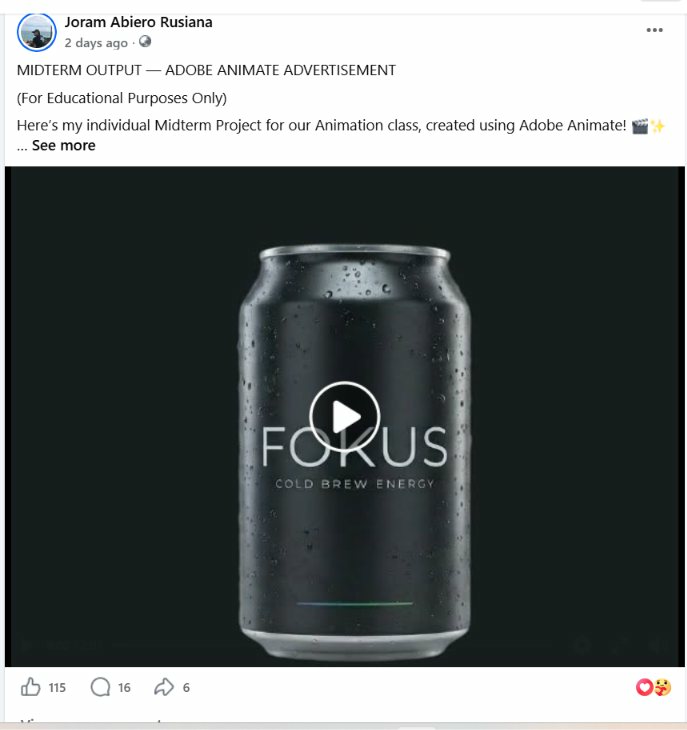

Electronic Vehicular Incident Report System
A web-based system for reporting vehicular incidents, with photo uploads, location info, report verification, maps, and an admin dashboard.
A few things I've built.

A web-based system for reporting vehicular incidents, with photo uploads, location info, report verification, maps, and an admin dashboard.

Animation activities made with Adobe Animate, including Squash and Stretch and Slow In / Slow Out.

A desktop-linked web application for managing barangay records — including document requests, blotter entries, announcements, and generated reports for residents and staff.

A short animated advertisement made in Adobe Animate, using motion tweens and timing to promote a sample product from start to end screen.